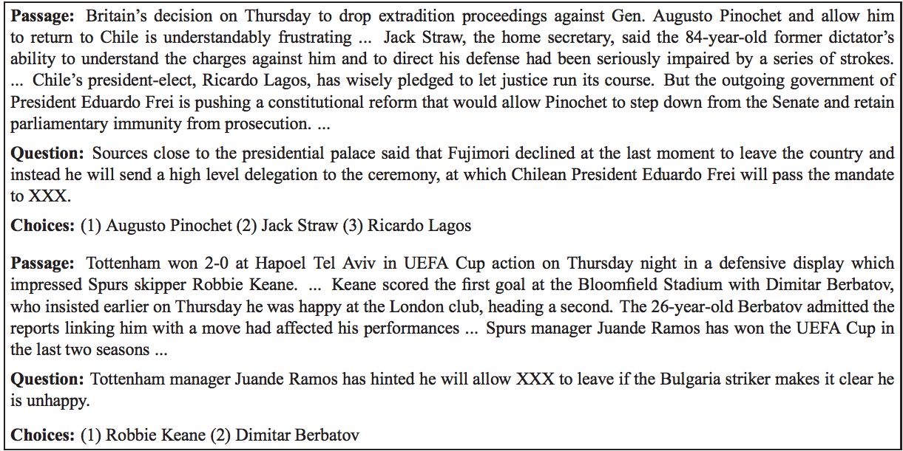
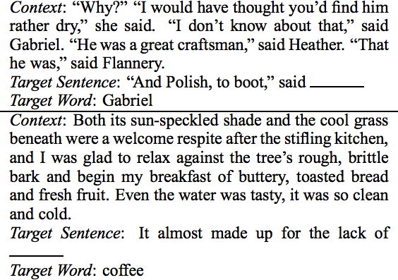
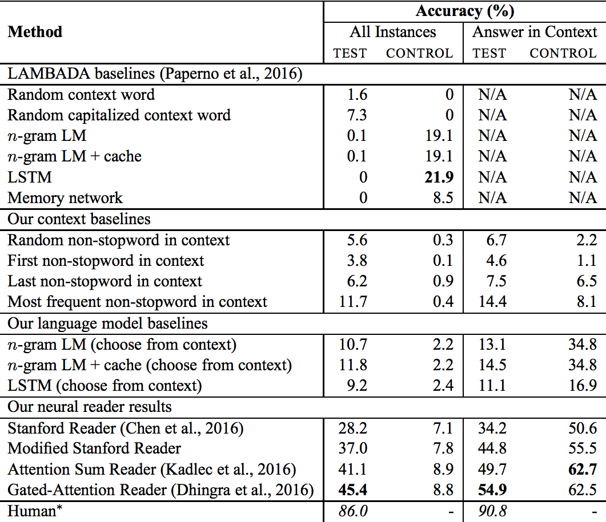
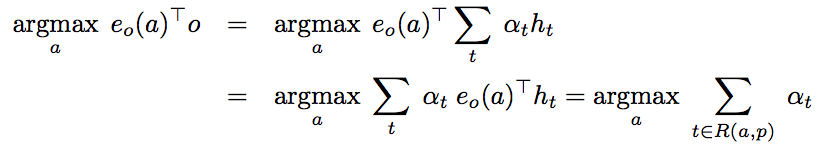
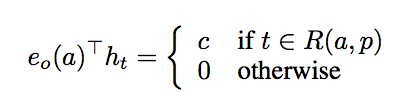
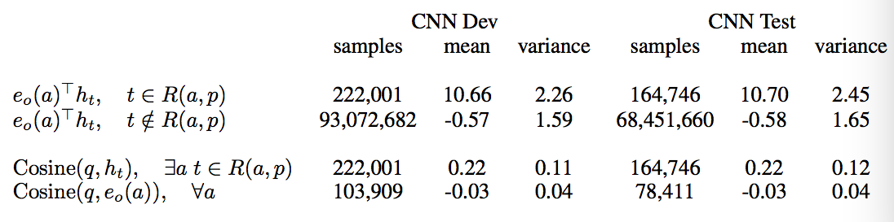
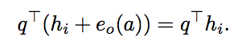

PaperWeekly 第十四期
引言
PaperWeekly已经介绍过不少Question Answering的相关工作。主要有DeepMind Attentive Reader，FAIR Memory Networks，Danqi’s Stanford Reader, Attention Sum Reader, Gated Attention Sum Reader, Attention Over Attention Reader, etc. 这些模型关联性很大，或多或少存在相似之处。本文给大家介绍一下Toyota Technological Institute at Chicago (TTIC)在Question Answering方面的相关工作，共有3篇paper：
1、Who did What: A Large-Scale Person-Centered Cloze Dataset, 2016
2、Broad Context Language Modeling as Reading Comprehension, 2016
3、Emergent Logical Structure in Vector Representations of Neural Readers, 2016
Who did What: A Large-Scale Person-Centered Cloze Dataset
作者
Takeshi Onishi, Hai Wang, Mohit Bansal, Kevin Gimpel, David McAllester
文章来源
EMNLP 2016
问题
文章构建了一个新的Question Answering dataset，”Who did What”。
sample instance如下图所示。

问题的句子总是挖掉了一些named entities，然后给出在文中出现过的别的named entities作为选项。这一个dataset的难度要高于之前的CNN/DM dataset，可以作为创建新模型的参考数据集。
模型
构建此数据集的方法与CNN/DM不同，问题并不是context passge的一个summary。问题与context均来自Gigaword Corpus，他们是两篇非常相关的文章。
具体来说，我们先找到一篇文章，作为question文章。然后提取出文中第一句话的named entities，删除其中的一个named entity作为将要被预测的答案。然后利用这一句question sentence，我们可以利用一些Information Retrieval系统从Gigaword Corpus找到一篇相关的文章作为passage。这篇文章与question文章不同，但是包含着与question sentence非常类似的信息。
有了passage之后，我们再从passage中找出named entities作为candidate answers。
为了使任务难度更大，我们用一些简单的baseline (First person in passage, etc) 将一些很容易做出的问题删掉，只留下比较困难的instances。这样构建的数据比CNN/DM会困难不少。
简评
相信作者创建的新数据集会给Machine comprehension带来一些新的问题与挑战，是很有价值的资源。文章采用的baseline suppresion方法可以用比较小的代价加大问题的难度，值得参考。
Broad Context Language Modeling as Reading Comprehension
作者
Zewei Chu, Hai Wang, Kevin Gimpel, David McAllester
文章来源
arXiv
问题
不久前发布的LAMBADA dataset中，作者尝试的各种baseline models都给出了比较差的结果。
每一个LAMBADA instance如下图所示。

模型
在观察了LAMBADA dataset之后，我们认为可以利用Reading comprehension models来提升准确率，而不必使用传统的language model。
由于state of the art reading comprehension models需要给出candidate answers，然后从中选出一个作为预测的答案，我们就将所有在context中出现过的单词都作为一个candidate answer。
LAMBADA给出的训练集是一些小说的文本。为了使训练集与测试集的数据类型保持一致，我们构建了一个biased training set。具体的做法是，我们将training set划分成4-5句话的context，然后保证target word在context passage中出现，只保留这样的训练数据。我们在新构建的training set上训练各种attention based models,得到了比原作者好得多的测试结果。

简评
这篇文章中，作者利用了简单的方法和模型将LAMBADA dataset的准确率从7.3%提高到45.4%，非常简单有效。
Emergent Logical Structure in Vector Representations of Neural Readers
作者
Hai Wang, Takeshi Onishi, Kevin Gimpel, David McAllester
文章来源
ICLR 2017 Submission
问题
最近提出的各种各样的attention based reader models,本文作者做了一个比较全面的总结和分析，并且通过数学分析和实验展示了模型之间的相关性。
模型
本文作者认为，当前的attention based models可以分为两类，aggregation readers(包括attentive readers和stanford readers)以及explicit reference readers(包括attention sum reader和gated attention sum reader)。
这两种reader可以用如下的公式联系在一起。

要满足上述等式，只需要满足下面的公式。

也就是说，只有正确答案所在的hidden vector和question vector得到的inner product才能给出不为零的常数。以下实验结论支持了这一假设。

由于CNN/DM在训练和测试中经过了anonymization，作者认为此inner product其实可以分为两部分，一部分与anonymized token ID有关，另一部分与ID无关。与ID相关的那一部分在inner product应该直接给出0的答案。如下述公式所示。

本文的另一部分工作是在attention readers上加入一些linguistic features提升各个数据集的准确读，这里不仔细描述。
简评
本文是对于各个attetion based neural reader models很好的总结，它很好地连接了各个不同的model，说明了为何看似不同的model能够给出非常类似的结果。
总结
问答系统是一类大的问题，也是目前NLP应用的研究热点之一。本文作者介绍了TTIC在QA研究中的一些成果，其中第二篇是本文作者近期的paper。感谢来自芝加哥大学的@ZeweiChu童鞋辛勤的劳动。
公益广告
清华大学计算机系自然语言处理实验室招聘博士后
将从事的研究方向
围绕自然语言处理、语义分析、统计机器翻译或社会计算开展深入的研究工作。实验室具体信息见：http://nlp.csai.tsinghua.edu.cn
应聘条件
1、具有计算机科学技术或相关学科博士学位（博士毕业两年内）；
2、熟悉自然语言处理或机器学习的基本理论、模型与算法，曾在国内外重要学术刊物或重要国际会议（CCF A类）上发表（含已录用）高水平学术论文；
3、在句法分析、语义分析方面有较好研究基础者优先；
4、具有较强的编程能力及项目研发能力；
5、责任心强，具有较好的团队合作精神和创新意识，英语阅读及写作能力较强；
6、符合清华大学博士后招收条件。
工资待遇
享受清华大学博士后待遇及课题组津贴。全力支持申请国家自然科学基金、全国博士后管委会、北京市、清华大学的相关研究计划。
申请材料
1、个人简历、学位证书及成绩单复印件；
2、最具代表性的论文2篇；
3、博士后期间研究设想（简明扼要）；
4、其它任何支持材料。
导师及联系方式
合作导师：孙茂松教授、刘知远助理教授
联系人：刘知远
电子邮件： liuzy@tsinghua.edu.cn
有意者请将申请材料发至电子邮箱，请在邮件主题中注明姓名和“申请博士后”。材料通过初选者进行面谈（面谈时间另行通知），然后走清华大学博士后申请程序。